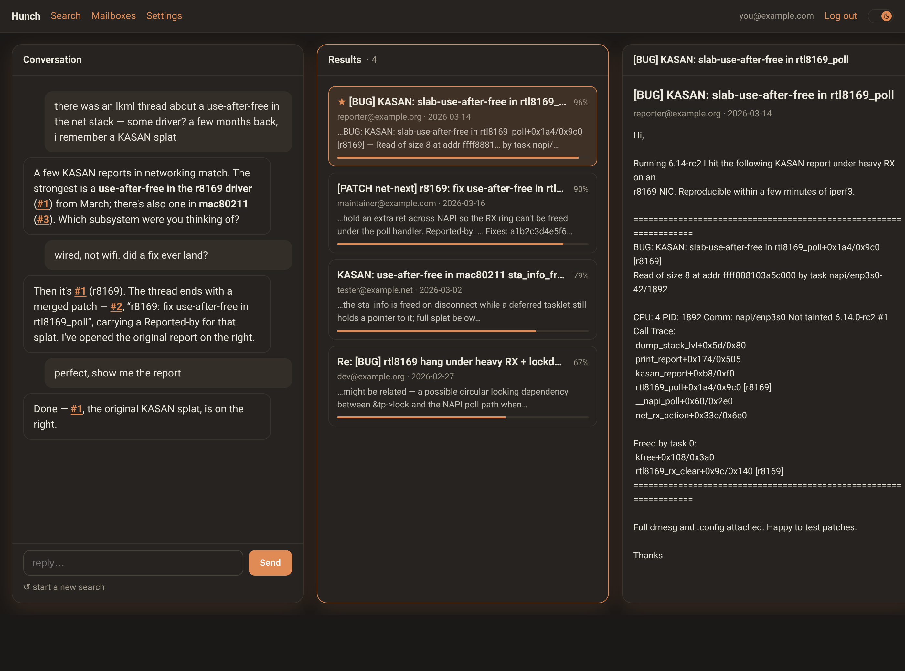
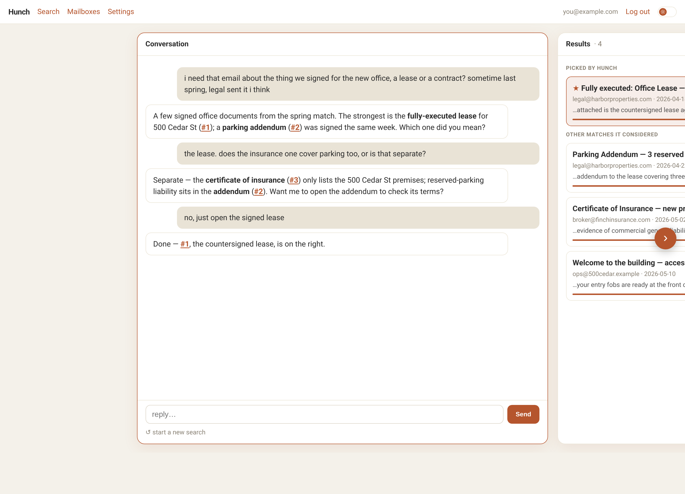
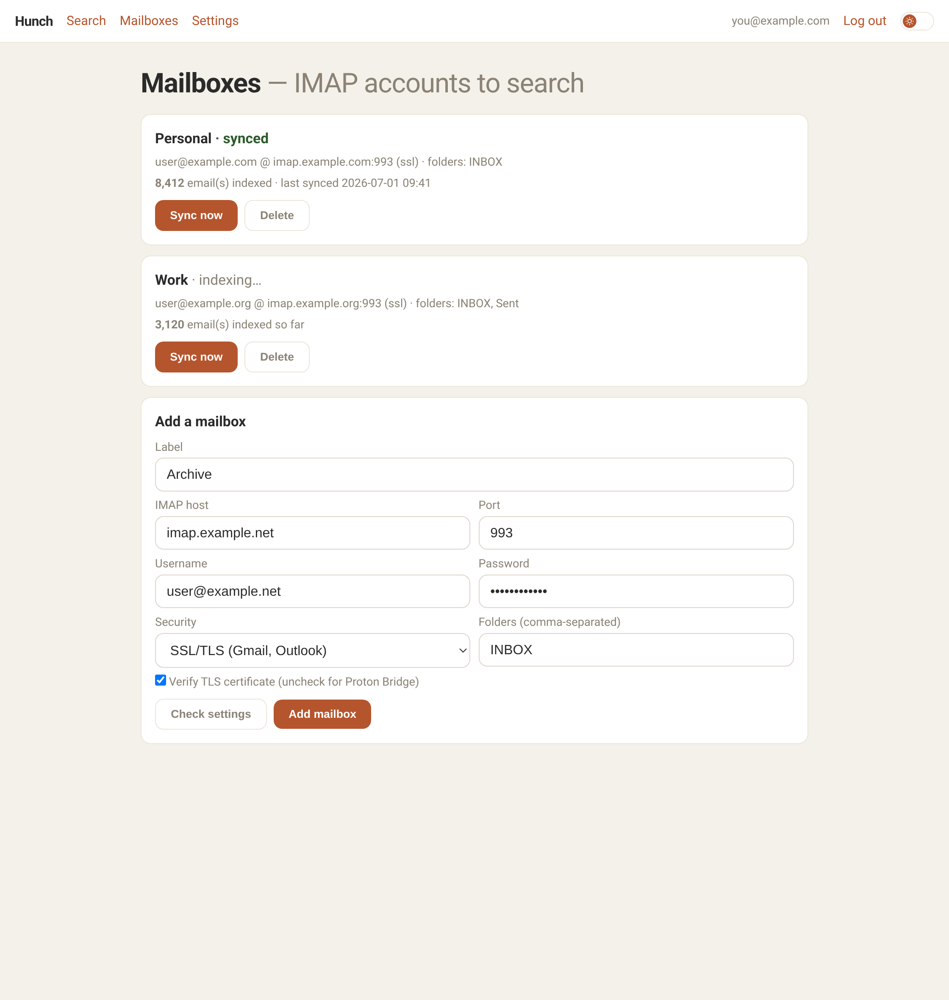

Find any email by describing it in your own words. A conversation, not a keyword search — no need to remember the exact words that are in the message.
View on GitHub → Want the details? How it's built · Run it yourselfVague in, the right email out — the conversation, live-ranked matches, and the email itself, side by side.



You rarely remember the words in an email — you remember the gist. Hunch is built for the gist.
Any IMAP account — Proton, Gmail, Outlook. Your credentials are encrypted.
Hunch indexes your mail on your own machine. Nothing is shipped off to an embedding service to be read.
"The document the bank sent about my mortgage." An AI agent searches, and asks a short question if it's unsure which one you mean.
Matches stream in and re-rank as it searches; click one to read it right beside the conversation. Read-only, always.
Hunch is open source and self-hosted. Here's how it works under the hood and how to run your own.